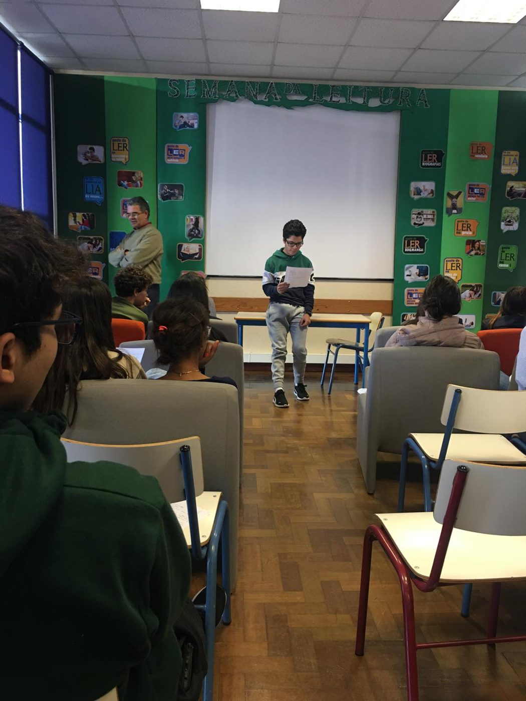
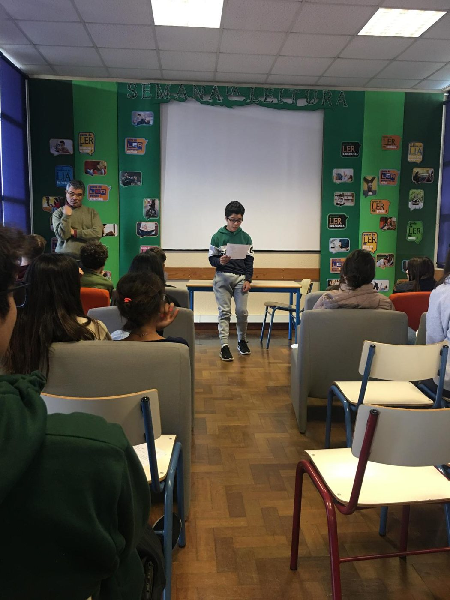
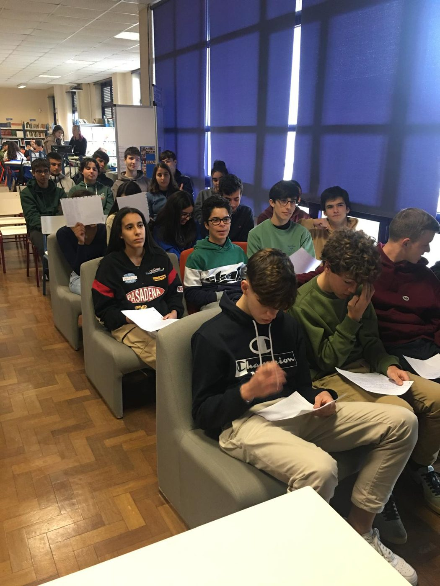
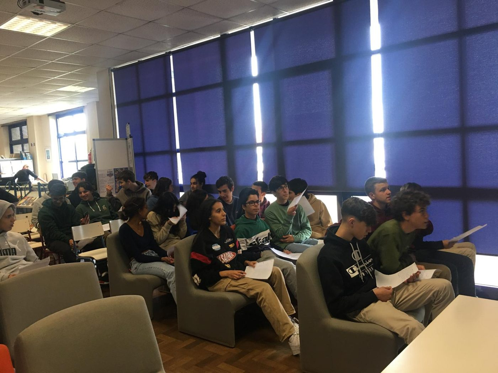

«Carta a Dom Henrique» — Semana da Leitura 2023
Biblioteca Escolar da EBS Amélia Rey Colaço · publicada na secção da turma 10.º A
Escrevi uma carta criativa ao infante D. Henrique — com direito a poema satírico — no âmbito da Semana da Leitura de 2023, quando frequentava o 10.º ano. O texto foi publicado no blog da Biblioteca Escolar do agrupamento, na secção da turma 10.º A, e apresentei-o publicamente numa sessão na biblioteca, perante colegas e professores.



